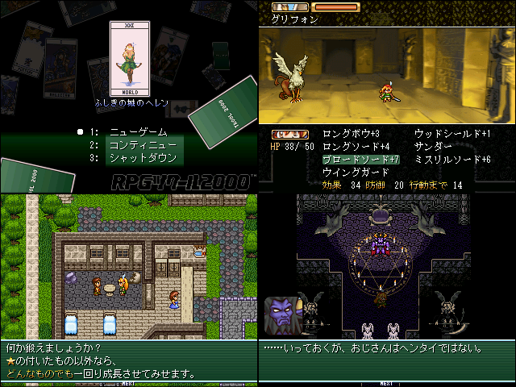

作品紹介
| ≪ Back | トップページ | 作品一覧 | Next ≫ |
| No022. - ふしぎの城のヘレン |

| 使用ツール：RPGツクール2000 |
| 作者：さつ |
| ジャンル：RPG |
| 動画・配信：特になし |
|
・道具の使いかたを ・迷宮の仕掛けを ・敵との戦いかたを ・自分について 少しだけ考えるRPG ◆プレイ時間３～４時間 |
| 管理人コメント：俺の性根の腐った心を鍛えなおしてください |
| ダウンロード(12.3MB) ① ② / 感想掲示板 ツイート |
更新情報・お知らせ
- 2011/01/09
- 本体修正
- 2011/12/30
- 本体修正
- 2011/12/27
- 本体修正
- 2011/12/26
- 本体修正
- 2011/12/23
- 提出
- 2011/11/01
- エントリー